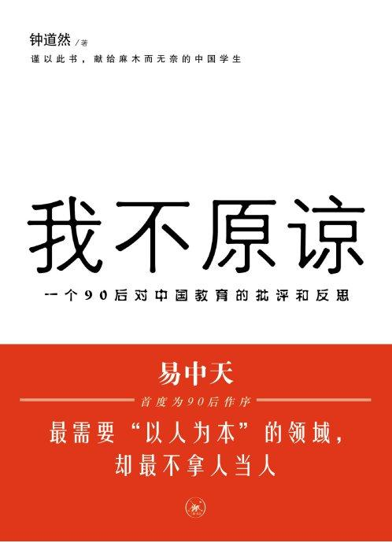

【我不原谅】一书的作者说：我不能原谅中国教育。永远不能。因为它浪费了我十几年时间，而且是生命中最宝贵的十几年。它把我的青春夺走了，这就跟杀了我一样。这不是俏皮，而是沉痛----非常沉痛的语言！本书是一个家长推荐给我的书，只看了一点点；内容我早已熟知---毕竟在大学里教书。但是这些事情由一个大学生自己写出来，与我这个大学老师写出来，份量是不一样的。我认为值得大家去思考，特别是值得家长们去思考。----除非您希望自己的孩子10 年，20 年之后，也用自己虚度的人生体验，再度“深刻”地写一本书，对您说：我不原谅中国教育！我这么大把年纪了，马上年过半百，已经到了孔子学易的年龄。与这个孩子不同，我愿意原谅中国教育。我愿意原谅教育局，原谅体制学校！原谅所有愚弄我们孩子的老师。我原谅中国教育。因为我完全可以自我教育，不必等待“中国教育”来拯救我。如果我要不原谅中国教育，我首先要不原谅我自己！我愿意选择原谅自己，原谅中国教育。我原谅教育局。教育局本来有自己的利益，他们会本能地维护自己的利益。可是如果我居然相信他挂了教育的牌子，就真在做教育的事情，就放心把孩子交给他们去整治收拾，就是我太呆了。如果这样我就不能原谅我自己。我原谅体制学校的老师。老师们无非为稻粱谋，无非为了一个饭碗，当做一个职业而不是“教育”在做事情。如果我也只为稻粱谋，忘记了应该去帮助孩子心灵的成长，忘记了我作为家长的责任，忘记了“养不教父之过”的古训，我跟这些体制内的老师有什么区别呢？这样的话我当然不能原谅自己！我原谅一切欺骗我的人。如果我没有首先欺骗自己，别人如何能够欺骗我呢？如果我居然当了别人的当，相信了别人欺骗我的话，证明我不能够为自己负责。因此被骗后我不能原谅的应该是自己！我原谅一切打击我，谩骂我，甚至无端攻击欺负我的人！但我不能原谅自己---如果我认同了他的谩骂，屈服于他的淫威，没有维护自己的尊严和荣誉，我将不能原谅自己。我希望来看这个博客的人，都有资格说：你愿意原谅中国教育，因为你愿意原谅自己。因为你已经做了一切努力，让失败的中国教育仅仅是“中国教育的失败”，但不是你的失败！千万不要因为你一直在“相信”它，“依赖”它，有一天突然梦醒过来，才悲切地说：我不原谅中国教育，永远也不！这就是一个伤感的故事了。清一题记
（能写出这种书，有这种思想和行动的孩子，就是我想要的“2012 小狮子”，学堂会免费提供他们学习的机会。你是吗？如果是，请证明你是！然后向学堂提出申请。追求真理和智慧的学堂将向你敞开。）

本书的部分内容（作者 钟道然）柏拉图说：人一下子从黑暗逃到光明时，总会觉得有些刺眼。我之前在大学也跟所有人一样，天天上课睡觉，睡醒了则十分淡定地拿手机刷校内。但刷着刷着，突然有一天发现自己已经20 岁了。之前一直觉得“20 岁”是个很可怕的东西，它意味着你不再年轻，但没关系嘛，离我还远着呢。而那天，我嗖一下看见它就在眼前。于是我就回头想啊想，想我拿这20 年干嘛了，然后骤然发现，我竟把大部分光阴丢给了中国教育。那就好比是发觉把自己最心爱的东西随手扔进了垃圾箱一样，哀吾不幸怒吾不争的悲凉之感、幽怨之情久久萦绕在小生心怀，让人想死的心都有。那一刻我真真切切地体会到了阿娇说的“很傻很天真”是啥意思。整整十几年啊，我干什么不好，怎么就那么傻，那么天真，把它卖给了中国教育。有别人奇怪我为什么这么痛恨中国教育。我的确无比痛恨它，但不是因为什么“它让中国培养不出一流人才”，我没有这样冠冕堂皇的高尚觉悟。我痛恨，只是因为它浪费了我十几年时间，而且是生命中最宝贵的十几年。它把我的青春夺走了，这就跟杀了我一样。为此，我不能原谅中国教育。永远不能。而若想让这青春不白被浪费，我唯一能做的，就是写一本书来控诉中国教育。One should always be a little improbable.—Oscar Wilde人总要有点不可理喻之处。—王尔德还有人觉得我特别不可理喻：“你说你都上了这么好的大学了，还唧唧歪歪什么啊，你是中国教育的受益者，你应当感激它才是。”你才不可理喻呢。这就好比所有学生都被扔进牢房，只不过别人那儿都是铁栏杆，我这儿的是镀了层金的；别人那儿都是水泥地，我这儿是瓷砖。按您的说法，我应该感谢教育，给我安排条件这么好一牢房？不管是关进哪个牢房，你，我，所有中国学生，都是中国教育的受害者。若说有什么真正不可理喻的，就是一些学生麻木的态度。就像是有人打你，你不还手就算了吧，还敞开胸怀让他打；就像是有人偷你东西，你不拦着不说，还打开口袋让他偷。是的，我们每一个受害者都无力去反抗，但这能是你麻木的借口吗？好比有个人拿刀捅你，你若是神经麻木毫无知觉，则感受不到疼，反而觉得这没什么。但最终流血的，不还是你么？虽然行为被束缚，但精神总还可以不服从；即便无法挣脱铁链，但你仍然能够呐喊吧？每一声呐喊，都是对世界的一次改变。即便只有一点点。我并没有想要让您全部接受这本书里面的观点。但我的确是想，通过它，唤醒一些麻木的神经。那么在唤醒之后，你，我，咱们这些青年人，又该怎样呢？当然是，那三个字：做自己。
你的生命只有一次，难道你还要拿它去顺应别人的想法？这生命加起来不过几十个春秋，其中最珍贵的，也就是青年时期了吧。在你一生中，这个世界上，整个宇宙里，都不会再有一段这样只属于你的时光，都不会再有一片这样任你涂抹的天空。但若不去做自己，反而把它浪费在那些低俗无谓的事物上—就像我把它丢给中国教育—那绝对是不可饶恕的罪恶。在这个世界上你只能活一次，而若不去活成自己的样子，你还干嘛来的呢？最后，小生还是死性不改，要用亲爱的王同学的一段话结束全书。同时呢，也把这段我特别喜欢的话送给所有读此书的青年学生—Don't squander the gold of your days, listening to the tedious, trying to improvethe hopeless failure, or giving away your life to the ignorant, the common, and thevulgar. These are the sickly aims, the false ideals, of our age. Live! Live the wonderfullife that is in you! Let nothing be lost upon you.
—Oscar Wilde The Picture of Dorian Gray不要去倾听枯燥乏味的说教，也别试图去补救无望的过失，别在愚味、庸俗和猥琐的事上浪费你的生命。那些是我们这个时代病态的目标和虚假的理想。去过你奇妙的生活吧！一分一秒都不要浪费。推荐文章：实拍中国大学上课实录：http://blog.sina.com.cn/s/blog_5f5c578c0100m68n.html一：中国大学上课状况实录：我们看看这张照片。老师无奈的表情，前排是空出来的座位，后面是肆无忌惮大睡的学生。家长们难道愿意您天天逼孩子考上的大学，就是这个样子的吗？二：一贯勤奋读书的女生们也一样。要不趴在桌上睡，要不玩手机。三：中国的大学生在大白天上课的课堂上睡觉。可是，下图是美国的大学生，在图书馆自习的照片，座无虚席。时间是凌晨四点--似乎正好是合理合法的睡眠时间。中国教育与国外教育的差距，难道不正好说明张校长在【策论】中说的，中国教育与世界教育趋势是“背道而驰，走向完全相反”吗？
请救救中国的教育吧！为了挽救中国不乐观的未来。。